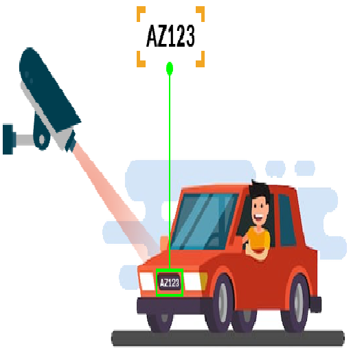

Automatic License Plate Recognition for Indian Vehicles
Automatic number-plate recognition is a technology that uses optical character recognition on images to read vehicle License plates.
For this we used YOLOv3 (You Only Look Onces) algorithm that can detect multiple objects in single run. this algorithm is very fast and accurate to detect objects in Video or Images.
The model is trained to detect number plates. The model is built taking into consideration the highest accuracy achievable. It has been trained on more than 2000 images.
Load Colab Notebooks git clone 'https://github.com/itsRajatkumar/ANPR_MANTHAN_ERROR404.git'
Load darknet Library git clone 'https://github.com/itsRajatkumar/darknet.git'
For pretrained model you can download form G-Drive G-Drive Link And put this model to correct path.
Training ANPR_Train.ipynb is the Jupyter notebook which contains the code used to train the
model. It can be run on Google Colab or locally using Anaconda. (When running using Anaconda make sure you
have the MANTHAN_ANPR folder placed correctly in the path.)
If you don't want to train the model from the beginning a pretrained model
yolo-obj_best.weights (Stored in Google Drive
/ANPR_MANTHAN/darknet/build/darknet/x64/backup ) contains pretrained weights to initialize the
model and test directly.
The yolo-obj_best.weights is the weights file which ANPR_TEST.ipynb uses to test
our model against images and videos. The following parts show how to test on images and videos.
Upload your image to ANPR_MANTHAN/darknet/test_videos_images. Change
image3.jpg to
the name of your image file in the in the following section in the "Test on Image" section.
!./darknet detector test /myDrive/build/darknet/x64/data/obj.data /myDrive/build/darknet/x64/cfg/yolo-obj.cfg /myDrive/build/darknet/x64/backup/yolo-obj_best.weights /myDrive/test_videos_images/image3.jpg
The resulting image with the bounding box is stored as predictions.jpg in
ANPR_MANTHAN/darknet
Upload your test video to ANPR_MANTHAN/darknet/test_videos_images. Rename your video to
"video.mp4" before running the block with the following code:
!./darknet detector demo /myDrive/build/darknet/x64/data/obj.data /myDrive/build/darknet/x64/cfg/yolo-obj.cfg /myDrive/build/darknet/x64/backup/yolo-obj_best.weights -dont_show /myDrive/test_videos_images/video.mp4 -i 0 -out_filename res.avi
Once the number plates have been successfully detected, they are cropped from the image using their bounding box coordinates and saved.
OCR model is also built taking into consideration the highest accuracy achievable. It has been trained on more
than 1100 images of characters.
OCR OCR_Test.ipynb is the Jupyter notebook which contains the code used to test the
model. It can be run on Google Colab or locally using Anaconda.
run OCR_Test.ipynb file
Provide Image Path And Run All Cells In Order AndIn the last you will get the output in a string formet. and finally we get our number-plate in string formet